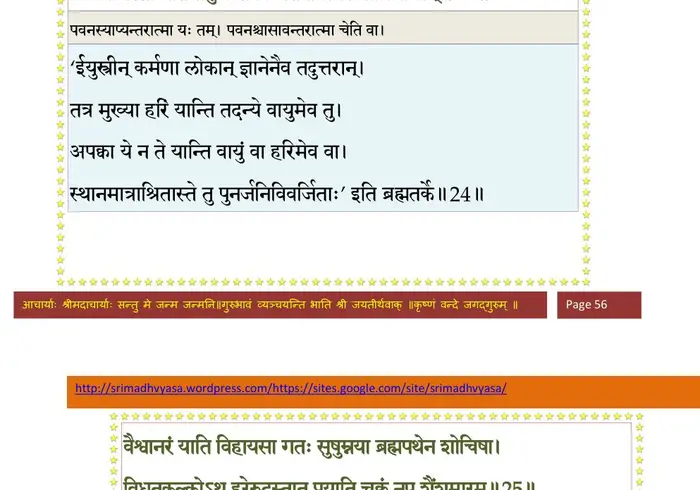
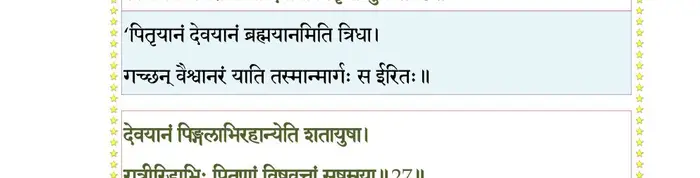
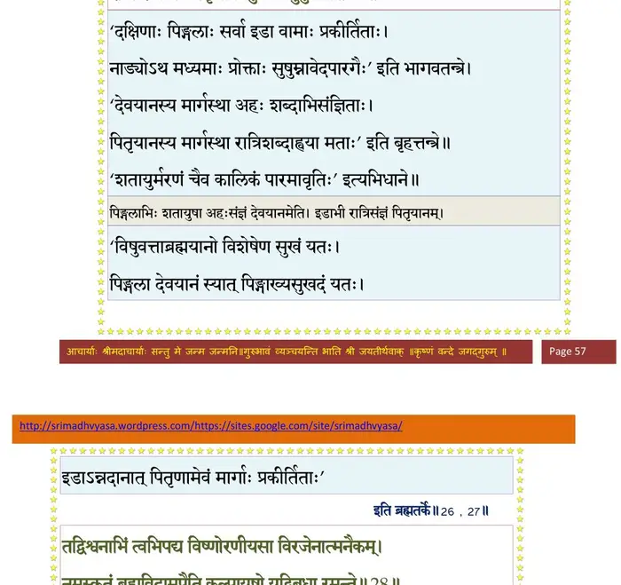
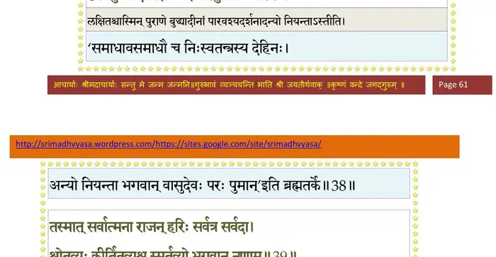

स्कन्ध 2 · अध्याय 2
श्लोक १
शुक उवाच–
एवं पुरा धारणयाऽऽत्मयोनिर्नष्टां स्मृतिं प्रत्यवरुह्य तुष्यन् ।
तथा ससर्जेदममोघदृष्टिर्यथाऽप्ययात्प्रग्व्यवसायबुद्धिः।। १ ।।
एवं पुरा धारणयाऽऽत्मयोनिर्नष्टां स्मृतिं प्रत्यवरुह्य तुष्यन् ।
तथा ससर्जेदममोघदृष्टिर्यथाऽप्ययात्प्रग्व्यवसायबुद्धिः।। १ ।।
श्लोक २
शब्दस्य हि ब्रह्मण एष पन्थाः यन्नामभिर्ध्यायति धीरपार्थैः ।
परिभ्रमंस्तत्र न विन्दतेऽर्थान्मायामये वासनया शयानः।। २ ।।
परिभ्रमंस्तत्र न विन्दतेऽर्थान्मायामये वासनया शयानः।। २ ।।
श्लोक ३
अतः कविर्नामसु यावदर्थः स्यादप्रमत्तो व्यवसायबुद्धिः ।
सिद्धेऽन्यथार्थे न यतेत तत्तत्परिश्रमं तत्र समीक्षमाणः।। ३ ।।
सिद्धेऽन्यथार्थे न यतेत तत्तत्परिश्रमं तत्र समीक्षमाणः।। ३ ।।
श्लोक ४
सत्यां क्षितौ किं कशिपोः प्रयासैर्बाहौ स्वसिद्धे ह्युपबर्हणैः किम् ।
सत्यञ्जलौ किं पुरुपर्णपात्रैर्दिग्वस्त्रलाभे सति किं दुकूलैः।। ४ ।।
सत्यञ्जलौ किं पुरुपर्णपात्रैर्दिग्वस्त्रलाभे सति किं दुकूलैः।। ४ ।।
श्लोक ५
चीराणि किं पथि न सन्ति दिशन्ति भिक्षां
नो वाऽङ्घ्रिपाः परभृतः सरितोऽप्यशुष्यन् ।
रुद्धा गुहाः किमवधूतसुहृन्न कृष्णः
कस्माद्भजन्ति कवयो धनदुर्मदान्धान्।। ५ ।।
नो वाऽङ्घ्रिपाः परभृतः सरितोऽप्यशुष्यन् ।
रुद्धा गुहाः किमवधूतसुहृन्न कृष्णः
कस्माद्भजन्ति कवयो धनदुर्मदान्धान्।। ५ ।।
श्लोक ६
एवं स्वचित्ते स्वत एव सिद्ध आत्मप्रिायोऽर्थो भगवाननन्तः ।
तं निर्वृतो नियतार्थो भजेत संसारहेतूपरमश्च यत्र।। ६ ।।
तं निर्वृतो नियतार्थो भजेत संसारहेतूपरमश्च यत्र।। ६ ।।
श्लोक ७
स सर्वविद् हृद्यनुभूश्च सर्व आत्मा यथा सुप्तजनेक्षितैकः ।
तं सत्यमानन्दनिधिं भजेत सर्वात्मनाऽतोऽन्यत आत्मघातः।। ७ ।।
तं सत्यमानन्दनिधिं भजेत सर्वात्मनाऽतोऽन्यत आत्मघातः।। ७ ।।
श्लोक ८
कस्तं त्वनादृत्य परानुचिन्तामृते पशुत्वमसतीं नाम युञ्ज्यात् ।
पश्यन् जनं पतितं वैतरण्यां स्वकर्मजान् परितापाञ्जुषाणम्।। ८ ।।
पश्यन् जनं पतितं वैतरण्यां स्वकर्मजान् परितापाञ्जुषाणम्।। ८ ।।
श्लोक ९
केचित्स्वदेहान्तर्हृदयावकाशे प्रदेशमात्रं पुरुषं वसन्तम् ।
चतुर्भुजं कञ्जरथाङ्गशङ्खगदाधरं धारणया स्मरन्ति।। ९ ।।
चतुर्भुजं कञ्जरथाङ्गशङ्खगदाधरं धारणया स्मरन्ति।। ९ ।।
श्लोक १०
प्रसन्नवक्त्रं नलिनायतेक्षणं कदम्बकिञ्जल्कपिशङ्गवाससम् ।
लसन्महाहारहिरण्मयाङ्गदं स्फुरन्महारत्नकिरीटकुण्डलम्।। १० ।।
लसन्महाहारहिरण्मयाङ्गदं स्फुरन्महारत्नकिरीटकुण्डलम्।। १० ।।
श्लोक ११
उन्निद्रहृत्पङ्कजकर्णिकालये योगेश्वरास्थापितपादपल्लवम् ।
श्रीलक्षणं कौस्तुभरत्नकन्धरमम्लानलक्ष्म्या वनमालयाऽञ्चितम्।।११।।
श्रीलक्षणं कौस्तुभरत्नकन्धरमम्लानलक्ष्म्या वनमालयाऽञ्चितम्।।११।।
श्लोक १२
विभूषितं मेखलयाङ्गुलीयकैर्महाधनैर्नूपुरकङ्कणादिभिः ।
स्निग्धामलैः कुञ्चितनीलकुन्तलैर्विरोचमानाननहासपेशलम्।। १२ ।।
स्निग्धामलैः कुञ्चितनीलकुन्तलैर्विरोचमानाननहासपेशलम्।। १२ ।।
श्लोक १३
अदीनलीलाहसितेक्षणोल्लसद्भ्रूभङ्गसंसूचितभूर्यनुग्रहम् ।
ईक्षेत चिन्तामयमेनमीश्वरं यावन्मनो धारणयाऽवतिष्ठते।। १३ ।।
ईक्षेत चिन्तामयमेनमीश्वरं यावन्मनो धारणयाऽवतिष्ठते।। १३ ।।
श्लोक १४
एकैकशोऽङ्गानि धियाऽनुभावयेत्पादादियावद्धसितं गदाभृतः ।
जितं जितं स्थानमपोह्य धारयेत्परं परं शुद्ध्यति धीर्यथा यथा।। १४ ।।
जितं जितं स्थानमपोह्य धारयेत्परं परं शुद्ध्यति धीर्यथा यथा।। १४ ।।
श्लोक १५
यावन्न जायेत परावरेऽस्मिन् विश्वेश्वरे द्रष्टरि भक्तियोगः ।
तावत्स्थवीयः पुरुषस्य रूपं क्रियावसाने प्रयतः स्मरेत।। १५ ।।
तावत्स्थवीयः पुरुषस्य रूपं क्रियावसाने प्रयतः स्मरेत।। १५ ।।
श्लोक १६
स्थिरं सुखं चासनमास्थितो यतिर्यदा जिहासुरिममङ्ग लोकम् ।
काले च देशे च मनो न सज्जेत् प्रणान्नियच्छेन्मनसा जितासुः।। १६ ।।
काले च देशे च मनो न सज्जेत् प्रणान्नियच्छेन्मनसा जितासुः।। १६ ।।
श्लोक १७
मनश्च बुध्याऽमलया नियम्य क्षेत्रज्ञ एतां निनयेत्तमात्मनि ।
आत्मानमात्मन्यवरुध्य धीरो लब्धोपशान्तिर्विरमेत कृत्यात्।।१७।।
आत्मानमात्मन्यवरुध्य धीरो लब्धोपशान्तिर्विरमेत कृत्यात्।।१७।।
श्लोक १८
न यत्र कालोऽनिमिषां परः प्रभुः कुतो नु देवा जगतां य ईशिरे ।
न यत्र सत्वं न रजस्तमश्च न वै विकारो न महान्प्रधानम्।।१८।।
न यत्र सत्वं न रजस्तमश्च न वै विकारो न महान्प्रधानम्।।१८।।
श्लोक १९
परं पदं वैष्णवमामनन्ति तद्यन्नेति नेतीत्यतदुत्सिसृक्षवः ।
विसृज्य दौरात्म्यमनन्यसौहृदा हृदोपगुह्यापुरमुं पदे पदे।। १९ ।।
विसृज्य दौरात्म्यमनन्यसौहृदा हृदोपगुह्यापुरमुं पदे पदे।। १९ ।।
श्लोक २०
इत्थं मुनिस्तूपरमेद्व्यवस्थितो विज्ञानदृग्वीर्यसुरन्धिताशयः ।
स्वपार्ष्णिनाऽऽपीड्य गुदं ततोऽनिलं स्थानेषु षट्सून्नमयेज्जितक्लमः।। २० ।।
स्वपार्ष्णिनाऽऽपीड्य गुदं ततोऽनिलं स्थानेषु षट्सून्नमयेज्जितक्लमः।। २० ।।
श्लोक २१
नाभ्यां स्थितं हृद्यवरोप्य तस्मादुदानगत्योरसि तं नयेन्मुनिः ।
ततोऽनुसन्धाय धिया मनस्वी स्वतालुमूलं शनकैर्नयेत।। २१ ।।
ततोऽनुसन्धाय धिया मनस्वी स्वतालुमूलं शनकैर्नयेत।। २१ ।।
श्लोक २२
तस्माद् भ्रुवोरन्तरमुन्नयेत निरुद्धसप्ताश्वपथोऽनपेक्षः ।
स्थित्वा मुहूर्तार्धमकुण्ठदृष्टिर्निर्भिद्य मूर्धन् विसृजेत्परं गतः।। २२ ।।
स्थित्वा मुहूर्तार्धमकुण्ठदृष्टिर्निर्भिद्य मूर्धन् विसृजेत्परं गतः।। २२ ।।
श्लोक २३
यदि प्रयास्यत्यथ पारमेष्ठ्यं वैहायसानामुत यद्विहारम् ।
अष्टाधिपत्यं गुणसन्निवाये सहैव गच्छेन्मनसेन्द्रियैश्च।। २३ ।।
अष्टाधिपत्यं गुणसन्निवाये सहैव गच्छेन्मनसेन्द्रियैश्च।। २३ ।।
श्लोक २४
योगेश्वराणां गतिमामनन्ति बहिस्त्रिलोक्याः पवनान्तरात्मा ।
न कर्मभिस्तां गतिमाप्नुवन्ति विद्यातपोयोगसमाधिभाजाम्।। २४ ।।
न कर्मभिस्तां गतिमाप्नुवन्ति विद्यातपोयोगसमाधिभाजाम्।। २४ ।।
भागवततात्पर्यनिर्णय

श्लोक २५
वैश्वानरं याति विहायसा गतः सुषुम्नया ब्रह्मपथेन शोचिषा ।
विधूतकल्कोऽथ हरेरुदस्तात्प्रयाति चक्रं नृप शैंशुमारम्।। २५ ।।
विधूतकल्कोऽथ हरेरुदस्तात्प्रयाति चक्रं नृप शैंशुमारम्।। २५ ।।
श्लोक २६
योऽन्तः पचति भूतानां यस्तपत्यण्डमध्यगः ।
सोऽग्निर्वैश्वानरो मार्गो देवानां पितृणां मुनेः।। २६ ।।
सोऽग्निर्वैश्वानरो मार्गो देवानां पितृणां मुनेः।। २६ ।।
भागवततात्पर्यनिर्णय

श्लोक २७
देवयानं पिङ्गलाभिरहान्येति शतायुषा ।
रात्रीरिडाभिः पितृणां विषुवत्तां सुषुम्नया।। २७ ।।
रात्रीरिडाभिः पितृणां विषुवत्तां सुषुम्नया।। २७ ।।
भागवततात्पर्यनिर्णय

श्लोक २८
तद्विश्वनाभिं त्वभिपद्य विष्णोरणीयसा विरजेनात्मनैकम् ।
नमस्कृतं ब्रह्मविदामुपैति कल्पायुषो यद्विबुधा रमन्ते।। २८ ।।
नमस्कृतं ब्रह्मविदामुपैति कल्पायुषो यद्विबुधा रमन्ते।। २८ ।।
श्लोक २९
अथो अनन्तस्य मुखानलेन दन्दह्यमानं स निरीक्ष्य विश्वम् ।
निर्याति सिद्धेश्वरजुष्टधिष्ण्यं यद्द्वैपरार्ध्यं तदु पारमेष्ठ्यम्।। २९ ।।
निर्याति सिद्धेश्वरजुष्टधिष्ण्यं यद्द्वैपरार्ध्यं तदु पारमेष्ठ्यम्।। २९ ।।
श्लोक ३०
न यत्र शोको न जरा न मृत्युर्नाधिर्न चोद्वेग ऋते कुतश्चित् ।
यश्चित्ततोदः क्रिययाऽनिदंविदां दुरन्तदुःखप्रभवानुदर्शनात्।। ३० ।।
यश्चित्ततोदः क्रिययाऽनिदंविदां दुरन्तदुःखप्रभवानुदर्शनात्।। ३० ।।
श्लोक ३१
ततो विशेषं प्रतिपद्य निर्भयस्तेनात्मनाऽपोऽनलमूधर्ि्न च त्वरन् ।
ज्योतिर्मयो वायुमुपेत्य काले वाय्वात्मना खं बृहदात्मलिङ्गम्।।३१।।
ज्योतिर्मयो वायुमुपेत्य काले वाय्वात्मना खं बृहदात्मलिङ्गम्।।३१।।
श्लोक ३२
घ्राणेन गन्धं रसनेन वै रसं रूपं तु दृष्ट्या स्पर्शं त्वचैव ।
श्रोत्रेण चोपेत्य नभोगुणं तत्प्रायेण नावृत्तिमुपैति योगी।। ३२ ।।
श्रोत्रेण चोपेत्य नभोगुणं तत्प्रायेण नावृत्तिमुपैति योगी।। ३२ ।।
श्लोक ३३
स भूतसूक्ष्मेन्द्रियसन्निकर्षात् सनातनोऽसौ भगवाननादिः ।
मनोमयं देवमयं विकार्यं संसाद्य मत्या सह तेन याति।। ३३ ।।
मनोमयं देवमयं विकार्यं संसाद्य मत्या सह तेन याति।। ३३ ।।
श्लोक ३४
विज्ञानतत्वं गुणसन्निरोधं तेनात्मनाऽऽत्मानमुपैति शान्तिम् ।
आनन्दमानन्दमयोऽवसाने सर्वात्मके ब्रह्मणि वासुदेवे।। ३४ ।।
आनन्दमानन्दमयोऽवसाने सर्वात्मके ब्रह्मणि वासुदेवे।। ३४ ।।
श्लोक ३४
एतां गतिं भागवतो गतो यः स वै पुनर्नेह विषज्जतेऽङ्ग ।
एते सृती ते नृप वेदगीते त्वयाऽभिपृष्टेऽथ सनातने च ।। ३४ ।।
एते सृती ते नृप वेदगीते त्वयाऽभिपृष्टेऽथ सनातने च ।। ३४ ।।
श्लोक ३५
ये द्वे पुरा ब्रह्मण आह पृष्टः आराधितो भगवान् वासुदेवः।।३५।।
श्लोक ३६
नह्यतोऽन्यः शिवः पन्थाः विश्रुतः संसृताविह ।
वासुदेवे भगवति भक्तियोगो यतो भवेत्।। ३६ ।।
वासुदेवे भगवति भक्तियोगो यतो भवेत्।। ३६ ।।
श्लोक ३७
भगवान् ब्रह्म कार्त्स्न्येन त्रिरन्वीक्ष्य मनीषया ।
तद्धि ह्यपश्यत्कूटस्थे रतिरात्मन् यतो भवेत्।। ३७ ।।
तद्धि ह्यपश्यत्कूटस्थे रतिरात्मन् यतो भवेत्।। ३७ ।।
श्लोक ३८
भगवान् सर्वभूतेषु लक्षितश्चात्मना हरिः ।
दृश्यैर्बुद्ध्यादिभिर्द्रष्टा लक्षणैरनुमापकैः।। ३८ ।।
दृश्यैर्बुद्ध्यादिभिर्द्रष्टा लक्षणैरनुमापकैः।। ३८ ।।
भागवततात्पर्यनिर्णय

श्लोक ३९
तस्मात्सर्वात्मना राजन् हरिः सर्वत्र सर्वदा ।
श्रोतव्यः कीर्तितव्यश्च स्मर्तव्यो भगवान्नृणाम्।। ३९ ।।
श्रोतव्यः कीर्तितव्यश्च स्मर्तव्यो भगवान्नृणाम्।। ३९ ।।
श्लोक ४०
पिबन्ति ये भगवत आत्मनः सतां कथामृतं श्रवणपुटेषु सम्भृतम् ।
पुनन्ति ते विषयविदूषिताशयं व्रजन्ति तच्चरणसरोरुहान्तिकम्।।४०।।
पुनन्ति ते विषयविदूषिताशयं व्रजन्ति तच्चरणसरोरुहान्तिकम्।।४०।।
।। इति श्रीमद्भागवते द्वितीयस्कन्धे द्वितीयोऽध्यायः ।।